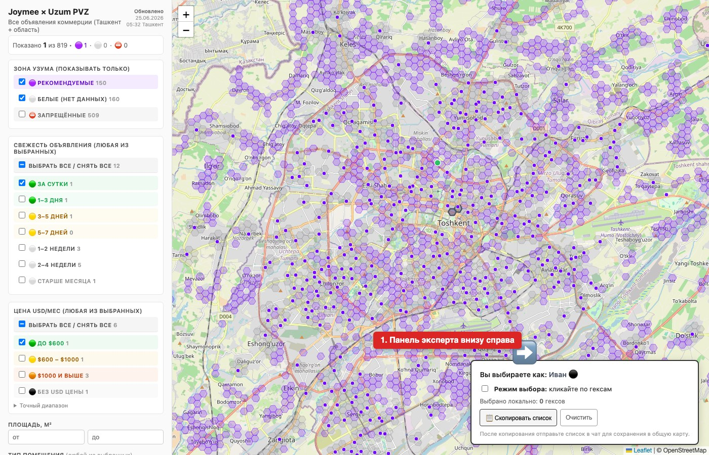
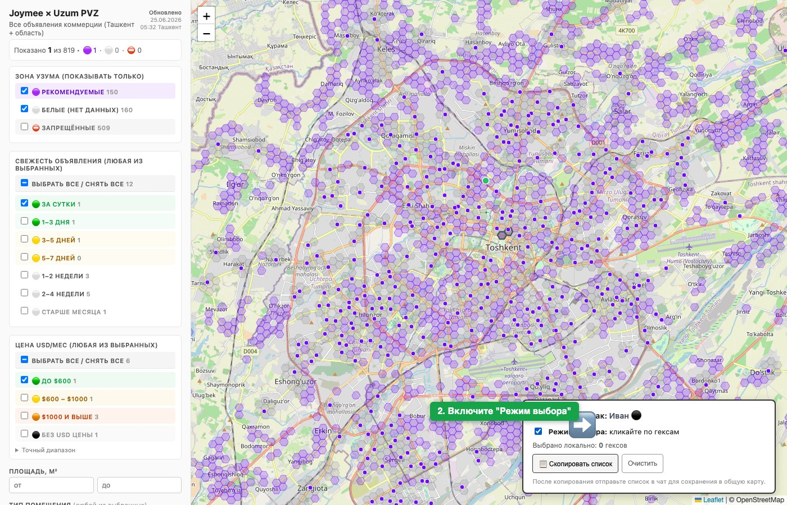
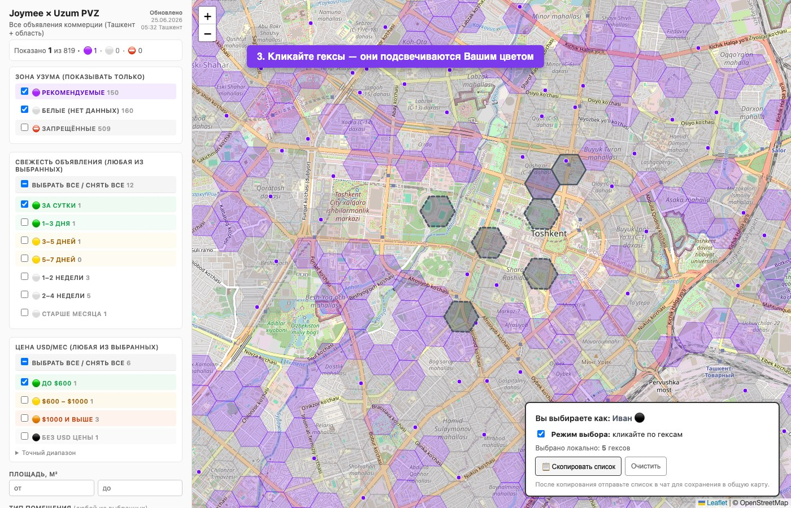
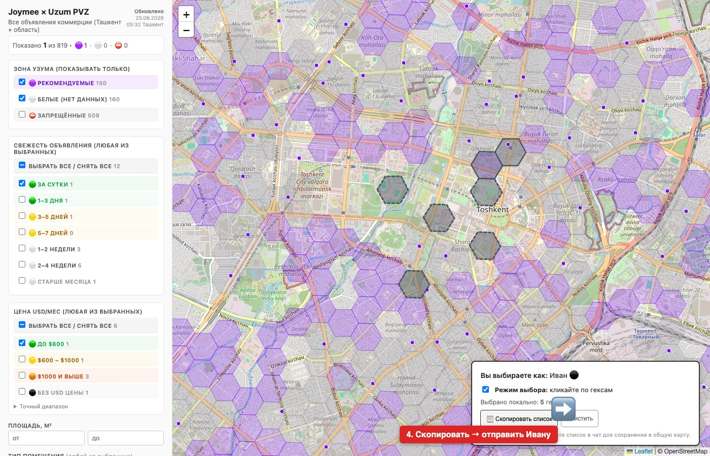
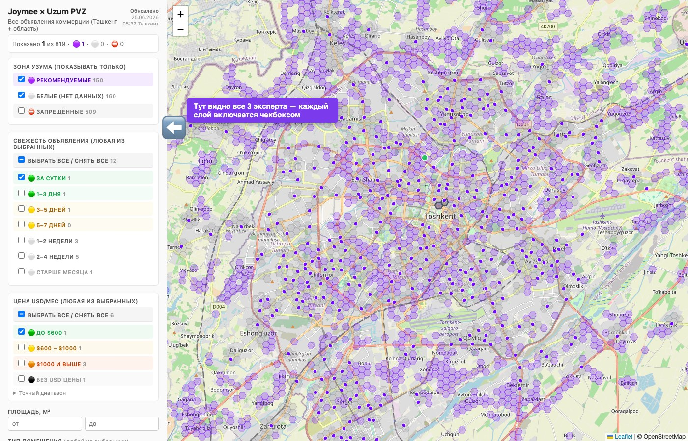

Перейдите по ссылке из таблицы выше — карта откроется в браузере. Через 2-3 секунды внизу справа появится панель с Вашим именем:

💡 Если панели нет — обновите страницу с зажатой клавишей Shift (на Mac: ⌘⇧R).
2 Включите «Режим выбора»
В панели поставьте галочку «Режим выбора: кликайте по гексам». После этого клики по карте начнут добавлять гексы в Вашу выборку.

3 Кликайте по гексам
Масштабируйте карту колёсиком мыши до удобного увеличения и кликайте по гексам, которые Вы рекомендуете для открытия ПВЗ. Выбранные гексы подсветятся пунктирной обводкой Вашего цвета.

💡 Если случайно выбрали лишний гекс — кликните по нему ещё раз, выбор снимется. Счётчик «Выбрано локально» в панели показывает текущее количество.
4 Скопируйте список и отправьте Ивану
Когда Вы закончили — нажмите кнопку 📋 Скопировать список в панели. В буфер обмена попадёт список выбранных гексов вида T-1234, T-5678, T-9012. Вставьте его в чат и отправьте Ивану — он сохранит выборку на общую карту.

5 Общая карта со всеми экспертами
После того как Иван сохранит Ваш список, выбранные Вами гексы появятся на общей карте как отдельный слой с Вашим именем. В блоке «Выборы экспертов» в левой панели каждый слой можно включать/выключать чекбоксом.

💡 Полезное
Выборка не теряется при закрытии вкладки — хранится в Вашем браузере. Откройте ссылку снова и увидите прежний выбор.
Чтобы изменить набор — добавляйте/убирайте гексы кликами, потом снова нажмите «Скопировать список» и отправьте Ивану полный обновлённый список (не разницу, а всю выборку).
Очистить всё — кнопка «Очистить» в панели с подтверждением.
Подсказка по плотности населения — включите слой 🌡 Скоринг гексов (heatmap) в левой панели карты. Ярко-зелёные гексы — там живёт больше всего людей.
Подписи гексов (T-XXXX) — включите слой 🔢 Номера гексов и сделайте зум ≥14. Полезно если хотите проверить конкретный T-номер.
Используйте все фильтры карты (зоны Узума, объявления joymee, цены) чтобы понимать контекст перед выбором гекса.